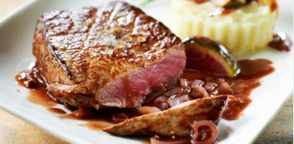

recettes de cuisine
1. Épluchez et ciselez les échalotes.
2. Faites fondre le beurre dans une poêle et faites-y fondre les échalotes.
3. Lorsqu'elles sont fondues, retirez-les de la poêle et faites dorer les pavés de boeuf de chaque côté. Salez et poivrez.
4. Remettez les échalotes, déglacez avec le vinaigre et laissez réduire un peu la sauce. Servez bien chaud.
